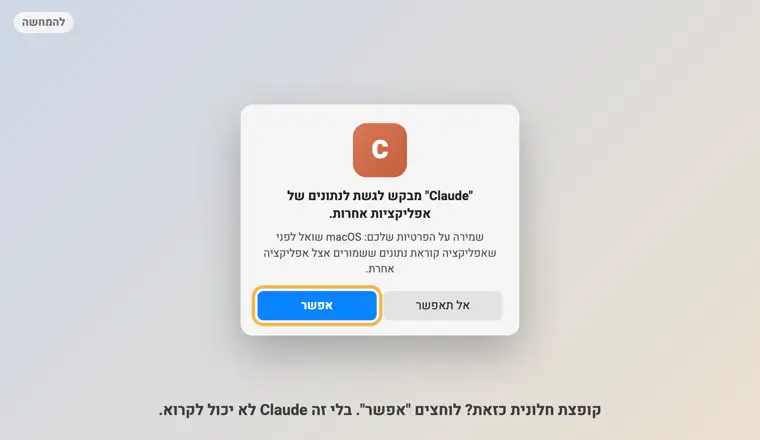
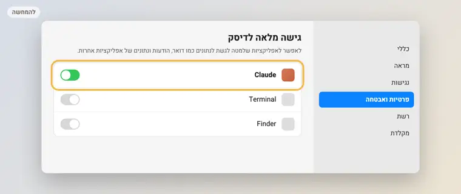
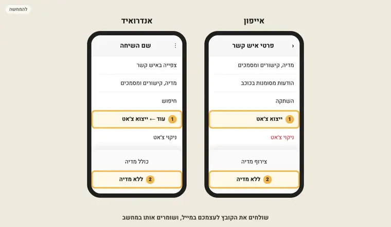

המדריך המלא, צעד אחרי צעד, עם צילומי מסך: הארכיטיפ שלכם, 5 ממדי אישיות, הפרצופים שלכם, איך אתם נותנים אהבה, והקול הפנימי. ההתקנה לוקחת 5 דקות, וכל הפרומפטים מחכים לכם כאן למטה, עם כפתור העתקה.
תתקין לי את הסקיל wa-mirror מהקישור הזה:
https://github.com/YOYOAQUA/wa-mirror
תוריד את הקבצים, ותשים אותם בתיקייה בשם wa-mirror בתוך תיקיית הסקילים של Claude.
תבדוק שיש בה קובץ SKILL.md.
בסוף תגיד לי לפתוח סשן חדש.
Claude יבקש אישור לפני כל פעולה. קוראים ומאשרים. אחרי ההתקנה פותחים סשן חדש, כדי ש-Claude יכיר את הסקיל.
חלק ב · המראה
4"תנתח את הוואטסאפ שלי"
בסשן החדש. Claude יוצר תיקייה בשם WhatsApp-Insights, קורא את השיחות מהשנה האחרונה, וסופר. אחר כך הוא שואל 3 שאלות קצרות: מגדר, ילדים ועיסוק. ואז הוא קורא דגימה של כאלף הודעות שלכם, וכותב את ניתוח האישיות. 5-10 דקות, וזמן טוב לקפה.
בסוף הדוח נפתח לבד בדפדפן.
תנתח את הוואטסאפ שלי

🔐 אם קופצת חלונית כזאת, לוחצים "אפשר".
🔐 קופצת חלונית ששואלת אם לאפשר ל-Claude גישה לנתונים של אפליקציות אחרות? לוחצים אפשר. בלי זה הוא לא יכול לקרוא.
Claude אומר שאין לו הרשאה? הגדרות המערכת ← פרטיות ואבטחה ← גישה מלאה לדיסק ← מדליקים את Claude. אחר כך סוגרים את Claude, פותחים מחדש, ושולחים שוב את המשפט.

⚙️ הגדרות המערכת ← פרטיות ואבטחה ← גישה מלאה לדיסק ← Claude דולק.
רוצים יותר משנה אחורה? כותבים "תנתח את כל ההיסטוריה של הוואטסאפ שלי". זה לוקח יותר זמן.
5קוראים את הדוח
הדוח בנוי בשכבות, וכל טענה בו מגיעה עם הוכחה. ככה כדאי לקרוא אותו:
הארכיטיפ. אחד מ-12, הראשי והמשני, ולמה דווקא הוא.
חמשת הממדים. סקרנות, סדר, מוחצנות, חום ויציבות. כל אחד הוא סקאלה, לא תווית.
הפרצופים. מי אתם עם בן או בת הזוג, בעבודה, עם החברים ועם עצמכם.
סגנון קשר ואהבה. מי יוזם, מה קורה כשלא עונים, ואיך אתם נותנים אהבה.
ערכים מול מציאות. מה חשוב לכם, ואיפה ההודעות באמת הולכות. תתחילו מהפער.
הקול הפנימי. איך אתם מדברים אל עצמכם, ומה אפשר להגיד במקום.
קבוצות, השנה כגל, קצב ומעגל. התפקיד שלכם, מתי פרחתם, ומתי הטלפון עובד.
כיוון. הדפוס שמחבר הכל, וצעד אחד לשבוע הקרוב.
🧬 חמשת הממדים (דוגמה): איפה אתם על כל סקאלה, והוכחה לכל אחד.🎭 הפרצופים (דוגמה עם שמות בדויים): אותו אדם, בעולמות שונים.
6כרטיס לסטורי
בראש הדוח יש כפתור "שיתוף הכרטיס לסטורי". הוא מכין תמונה עם הארכיטיפ שלכם, הציון ושלושה מספרים. בלי שמות ובלי תוכן של הודעות.
מעלים לסטורי ומתייגים אותי, @yoav_yosha. אני רוצה לראות 😉
🔒 משתפים רק את הכרטיס. קובץ הדוח עצמו (report.html) מכיל את ההודעות שלכם, אז לא שולחים אותו לאף אחד.
חלק ג · הולכים עמוק
7שואלים את Claude על הדוח
Claude כבר קרא את המספרים ואת הדגימה. עכשיו אפשר לשאול אותו כל שאלה, באותו סשן. כמה שאלות שעובדות טוב:
למה דווקא הארכיטיפ הזה? תראה לי 3 הוכחות מהשיחות,
ומה הצד הפחות נוח שלו אצלי.
איזה מהפרצופים שלי הכי שונה מהאחרים?
מה הוא אומר עליי, ומה הייתי מרוויח אם הוא היה מופיע גם במקומות אחרים?
הפער בין הערכים שלי למה שקורה בפועל בשיחות:
מה צעד אחד קטן שסוגר אותו השבוע?
האמונה המגבילה הכי חזקה שמצאת: איפה היא מופיעה אצלי בשיחות,
ומה המשפט ההפוך שכדאי לי לתרגל השבוע?
8תוכנית קטנה ל-7 ימים
הדוח נותן צעד אחד. כאן Claude הופך אותו לשבוע: פעולה קטנה ביום, עד 10 דקות.
תבנה לי תוכנית ל-7 ימים לפי הדוח: פעולה אחת ביום, עד 10 דקות.
תתחיל מהדבר שהכי מוריד לי את הציון.
ובסוף תגיד לי מה לבדוק כשאריץ את המראה שוב בעוד חודש.
9ווינדוס, או שיחות מהטלפון
אין מק, או שאתם רוצים להוסיף שיחה ישנה? מייצאים אותה מהטלפון, ללא מדיה, ושולחים את הקובץ לעצמכם במייל. מורידים למחשב, ו-Claude מנתח את מה שקיבל.
הכי מעניין: 2-3 שיחות. בן או בת זוג, קבוצת המשפחה, והחבר הכי קרוב.

📤 אייפון: השם למעלה ← ייצוא צ'אט ← ללא מדיה. אנדרואיד: ⋮ ← עוד ← ייצוא צ'אט ← ללא מדיה.
Claude ישאל איזה מהשמות בשיחה הוא אתם. עונים, והוא ממשיך.
10מראה חוזרת בעוד חודש
הדוח הראשון הוא נקודת התחלה. אחרי חודש עם הצעד שבחרתם, מריצים שוב ורואים מה זז.
תנתח את הוואטסאפ שלי שוב, ותשווה לדוח הקודם בתיקייה WhatsApp-Insights:
מה השתנה בארכיטיפ, בממדים, בציון ובמשפט שחוזר אצלי?
11משהו לא עובד
המראה לא עובדת. תבדוק מה הבעיה, תסביר לי במילים פשוטות, ותתקן.
אם אחרי 3 ניסיונות זה עדיין לא עובד, תעצור ותגיד לי.
[ 03 · לפני שמסתכלים במראה ]
7 דברים שכדאי לדעת
הארכיטיפ הוא שפה, לא כלוב
הוא מתאר מה בולט אצלכם השנה. בשנה אחרת, בתקופה אחרת, יכול לעלות אחר.
תקראו את ההוכחות, לא רק את השם
הכותרת מושכת, אבל האמת נמצאת במספרים ובמשפטים שלכם שמתחתיה.
הפרצוף הכי שונה הוא הכי מעניין
איפה שאתם כותבים הכי ארוך, הכי רך או הכי מצחיק, שם מסתתר משהו שרוצה עוד מקום.
הפער הוא המקום לצמוח
הדוח מראה מה חשוב לכם ואיפה הזמן באמת הולך. לא צריך לסגור את כל הפער, רק לזוז צעד.
המשפט שחוזר הוא המפתח
"אין לי זמן" שנכתב 100 פעמים בשנה הוא כבר לא תיאור. הוא אמונה.
תשובה תוך 2 דקות היא הרגל, לא חובה
רוב ההודעות יכולות לחכות שעה. מעטות באמת לא.
צעד אחד, לא מהפכה
בוחרים את הצעד שהדוח הציע, ובודקים שוב בעוד חודש.
[ 04 · נתקעתם? ]
שאלות ותקלות נפוצות
📸 הטריק שפותר כמעט הכל
משהו נראה לכם מוזר? מצלמים את המסך וגוררים את התמונה לחלון של Claude. הוא קורא את מה שיש בתמונה ומסביר מה קרה.
צילום מסך: במק ⌘⇧4 · בווינדוס Win⇧S
צילמתי לך את המסך. תסביר לי במילים פשוטות מה קרה, ותתקן.
אם צריך ממני משהו, תגיד לי בדיוק מה ללחוץ.
Claude אומר שאין לו הרשאה לקרוא
מה עושים: הגדרות המערכת ← פרטיות ואבטחה ← גישה מלאה לדיסק ← מדליקים את Claude. סוגרים את Claude לגמרי ופותחים מחדש. אם קופצת חלונית "לאפשר גישה לנתונים של אפליקציות אחרות", לוחצים אפשר.
קופצת חלונית שמבקשת להתקין כלים
מה עושים: מאשרים. זו התקנה חד-פעמית של אפל (Command Line Tools), שהסקיל צריך כדי לרוץ. כשהיא מסתיימת, שולחים שוב "תנתח את הוואטסאפ שלי".
Claude לא מוצא את הוואטסאפ
מה עושים: בודקים שאפליקציית WhatsApp למחשב מותקנת, פתוחה ומחוברת לטלפון (שלב 2). בווינדוס, עוברים למסלול עם שיחות מיוצאות (שלב 9).
Claude לא מכיר את הסקיל
מה עושים: פותחים סשן חדש. הסקיל נטען רק בסשן חדש. אם זה עדיין לא עובד, מדביקים שוב את הפרומפט של שלב 3.
הדוח לא נפתח
מה עושים: כותבים ל-Claude "תפתח לי את הדוח האחרון של המראה". הדוח נשמר בתיקייה WhatsApp-Insights, בתיקיית הבית.
יש לי מעט שיחות בדוח
למה: Claude רואה את מה שיש בוואטסאפ למחשב. אם חיברתם אותו לאחרונה, ההיסטוריה קצרה. שיחות חשובות וישנות אפשר לייצא מהטלפון ולהוסיף (שלב 9).
זה בטוח? יחסמו לי את החשבון?
Claude קורא עותק של קובץ שכבר נמצא במחשב שלכם. הוא לא מתחבר לחשבון ולא שולח כלום, אז אין לוואטסאפ סיבה לחסום. את המספרים סופרים במחשב. כדי לכתוב את הניתוח, Claude קורא את המספרים ודגימה של כאלף הודעות שלכם, עם הודעה או שתיים שקדמו לכל אחת, להקשר. כמו בכל שיחה איתו, זה לא נשלח לשום מקום אחר.
איך מוחקים הכל?
כותבים ל-Claude: "תמחק את התיקייה WhatsApp-Insights עם כל הדוחות". שם נמצאים העותק, המספרים והדוחות. הוואטסאפ עצמו לא משתנה.
זו מראה, לא אבחון. אם קשה לכם, ער״ן זמינים 24/7 בטלפון 1201.
[ 05 · מי אני ]
לא איש הייטק. פשוט רציתי לראות.
אני יואב יושע. הייתי שכיר בעולם הביטחון והסייבר. התחלתי מ-30 ימים של אמבטיות קרח ותיעוד קצר בטלפון. בלי קהל, בלי אינסטגרם.
משם נבנו פודקאסט, הרצאות ועסק. וכולם קורים בטלפון, ליד שני ילדים שרוצים אבא שמסתכל עליהם. רציתי לדעת איך אני באמת חי, לא איך נדמה לי. מזה נולד wa-mirror, סקיל חינמי בעברית, כדי שגם אתם תוכלו להסתכל.
אצלי יצא היוצר, עם הרבה מהמנהיג. והדבר שהכי תפס אותי: ההודעות שאני כותב לעצמי ארוכות פי 7 מאלה שאני שולח לכל השאר.